Loading required package: Matrix
Attaching package: 'Matrix'
The following objects are masked from 'package:tidyr':
expand, pack, unpack
Code
library(coefplot)library(sjPlot)
Install package "strengejacke" from GitHub (`devtools::install_github("strengejacke/strengejacke")`) to load all sj-packages at once!
Code
library(sjmisc)
Attaching package: 'sjmisc'
The following object is masked from 'package:purrr':
is_empty
The following object is masked from 'package:tibble':
add_case
The following object is masked from 'package:tidyr':
replace_na
Code
library(effects)
Loading required package: carData
lattice theme set by effectsTheme()
See ?effectsTheme for details.
Code
library(rgdal)
Loading required package: sp
Please note that rgdal will be retired by the end of 2023,
plan transition to sf/stars/terra functions using GDAL and PROJ
at your earliest convenience.
rgdal: version: 1.5-31, (SVN revision 1171)
Geospatial Data Abstraction Library extensions to R successfully loaded
Loaded GDAL runtime: GDAL 3.3.2, released 2021/09/01
Path to GDAL shared files: C:/Users/brunn/AppData/Local/R/win-library/4.2/sf/gdal
GDAL binary built with GEOS: TRUE
Loaded PROJ runtime: Rel. 7.2.1, January 1st, 2021, [PJ_VERSION: 721]
Path to PROJ shared files: C:/Users/brunn/AppData/Local/R/win-library/4.2/rgdal/proj
PROJ CDN enabled: FALSE
Linking to sp version:1.4-7
To mute warnings of possible GDAL/OSR exportToProj4() degradation,
use options("rgdal_show_exportToProj4_warnings"="none") before loading sp or rgdal.
Code
library(pbapply)library(maptools)
Checking rgeos availability: TRUE
Please note that 'maptools' will be retired by the end of 2023,
plan transition at your earliest convenience;
some functionality will be moved to 'sp'.
Code
library(rgeos)
rgeos version: 0.5-9, (SVN revision 684)
GEOS runtime version: 3.9.1-CAPI-1.14.2
Please note that rgeos will be retired by the end of 2023,
plan transition to sf functions using GEOS at your earliest convenience.
GEOS using OverlayNG
Linking to sp version: 1.4-7
Polygon checking: TRUE
Code
library(terra)
terra 1.6.7
Attaching package: 'terra'
The following object is masked from 'package:rgdal':
project
The following object is masked from 'package:sjmisc':
trim
The following object is masked from 'package:tidyr':
extract
The following object is masked from 'package:data.table':
shift
# calculate lags# positive values are a lag (range shift lower smaller than expected or in opposite directions) and negative values are range shift larger than expectedbiov1$lag <- biov1$velocity-biov1$SHIFTbiov1$lag2 <- biov1$lagbiov1$lag2[which(biov1$vel_sign =="neg")] <- biov1$lag[which(biov1$vel_sign =="neg")] *-1# Any negative velocity means the sign of lag has to shift.{par(mfrow=c(1,2))plot(lag~velocity, biov1)plot(lag2~velocity, biov1)}
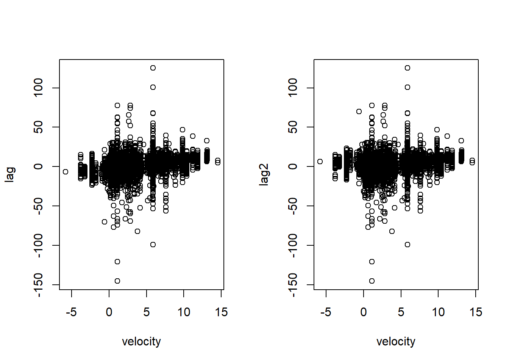
Code
ggplot() +geom_density(data = biov1, aes(x = lag), fill ="blue", color ="blue", alpha = .2)+geom_density(data = biov1, aes(x = lag2), fill ="red", color ="red", alpha = .2)
#MODELS with methods onlymeth <- biov1[,names(biov1) %in%c("Param","Data","Sampling","Grain_size","Uncertainty_Distribution","Uncertainty_Parameter","START","DUR","ID.area")] #remove "n" as can capture diversity gradientsmeth <-na.omit(meth)meth[,names(meth) %in%c("Param","Data","Sampling","Grain_size","Uncertainty_Distribution","Uncertainty_Parameter")] <-apply(meth[,names(meth) %in%c("Param","Data","Sampling","Grain_size","Uncertainty_Distribution","Uncertainty_Parameter")],2,function(x) as.numeric(factor(x)))cormat <-cor(meth)corrplot::corrplot(cormat)
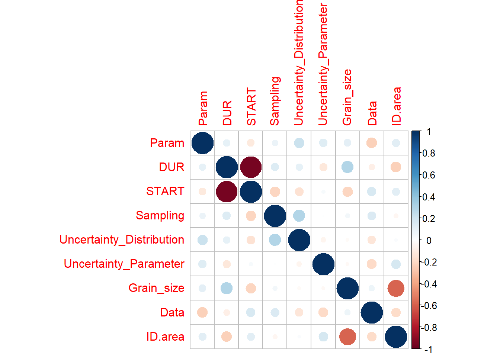
Code
#id.area and grain size are correlated so pick only area#start and duration are correlated so pick only dur# Latitude# lagdata.lat <- biov1 %>%select("spp","SHIFT","velocity","Class","Family","Genus","Group","shift_vel_sign","lat","long","ID","lag2","Type","Param","Data","Sampling","Grain_size","Uncertainty_Distribution","Uncertainty_Parameter","START","DUR","ID.area") %>%filter(Type =="LAT") %>% na.omitmod.meth.lat <-lmer(lag2 ~ DUR + ID.area + Data + Sampling + Uncertainty_Parameter + Uncertainty_Distribution + (1|ID) + (1|Class),REML=TRUE,na.action="na.fail",control=lmerControl(optimizer="Nelder_Mead",optCtrl=list(maxfun=1e4)),data = data.lat)MuMIn::r.squaredGLMM(mod.meth.lat)
Warning: 'r.squaredGLMM' now calculates a revised statistic. See the help page.
# Why De Kort data has the two peaks? It is due to the marker typeggplot(gen_d, aes(GDp)) +geom_histogram()+facet_grid(.~Marker)
`stat_bin()` using `bins = 30`. Pick better value with `binwidth`.
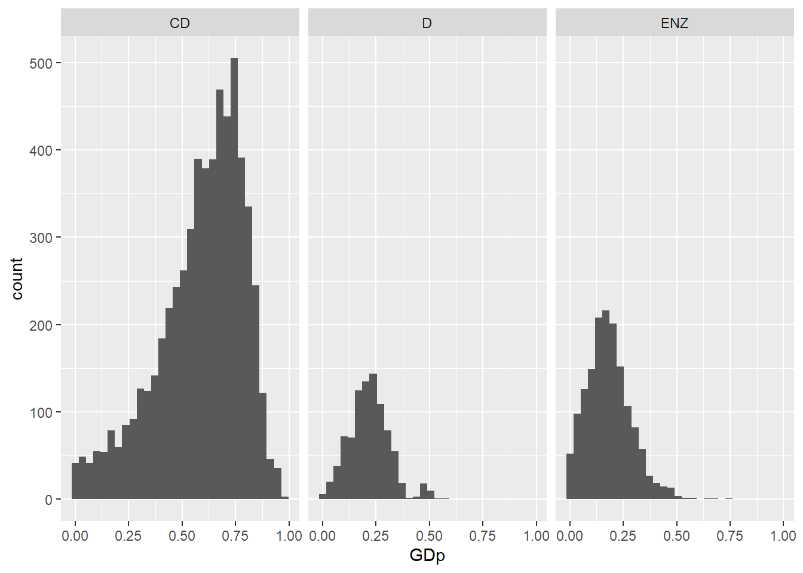
Code
# But if we look at the normalized GDp, the problem is solved. Therefore, we should be using the normalized version of GDp from DeKortggplot(gen_d, aes(GDp_norm)) +geom_histogram()
`stat_bin()` using `bins = 30`. Pick better value with `binwidth`.
`stat_bin()` using `bins = 30`. Pick better value with `binwidth`.
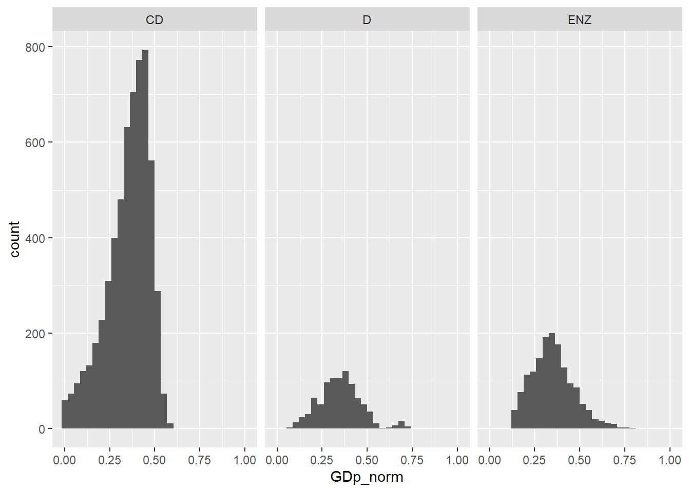
8 Create a single genetic diversity dataset
Code
transform01 <-function(x) (x * (length(x) -1) +0.5) / (length(x))# vec<-rnorm(100)+abs(min(vec))# vec<-vec+min(vec)# # hist(vec)# hist(transform01(vec))# Malinmt_sub <- mt %>%mutate(long =as.numeric(lon),lat =as.numeric(lat),N =as.numeric(n), # Sample sizeMarker ="Mitochondrial") %>%select(spp, He, long, lat, N, Marker) %>%filter(!is.na(He) |!He==0)mt_sub$Source ="Malin"mt_sub$Het_type ="He"ms_sub <- ms %>%mutate(long =as.numeric(lon),lat =as.numeric(lat),N =as.numeric(n), # Sample sizeMarker ="Microsatellite") %>%select(spp, He, long, lat, N, Marker) %>%filter(!is.na(He) |!He==0)ms_sub$Source ="Malin"ms_sub$Het_type ="He"#################### De Kort# Jonathan R.:# co-dominant refers to the fact that you can distinguish homozigous and heterozygous individuals, such as microsatellites# dominant means that you either have the detection of the marker or not. but you don’t know if the individual is heterozygous or not, such as AFLP# restriction enzymes are proteins that you use to cut the genomes into fragments. there are used for AFLP and allozymes, so not sure# De Kort code for Marker:# CD = Co-dominant# D = Dominant# ENZ = Enzimegen_d_sub <- gen_d %>%mutate(long =as.numeric(LONGITUDE),lat =as.numeric(LATITUDE),spp = spp_new, He =as.numeric(GDp),N =as.numeric(SampleSize), # Sample sizeMarker =case_when( Marker=="CD"~"Microsatellite", Marker=="D"~"AFLP", Marker=="ENZ"~"AFLP",TRUE~as.character(Marker))) %>%select(spp, He, long, lat, N, Marker) %>%filter(!is.na(He) |!He==0) %>%filter(!(Marker =="AFLP"& He > .5)) # AFLPs > 0.5 are errorsgen_d_sub$Source ="De Kort"gen_d_sub$Het_type ="He"# How DeKort calculated the normalized version of GDp# gen_d_sub$He_harm <- NA# # m <- unique(gen_d_sub$Marker)# for(i in 1:length(m)){# pos <- which(gen_d_sub$Marker == m[i])# gen_d_sub$He_harm[pos] <- scale(gen_d_sub$He[pos])# }# gen_d_sub$He_harm <- (gen_d_sub$He_harm - min(gen_d_sub$He_harm))/(max(gen_d_sub$He_harm)-min(gen_d_sub$He_harm))#################### Lawrence & Frasergen_lf_sub <- gen_lf %>%mutate(long =as.numeric(Long),lat =as.numeric(Lat),He =as.numeric(He),Ho =as.numeric(Ho),spp = spp_new,N =as.numeric(n), # Sample sizeMarker ="Microsatellite") %>%select(spp, He, Ho, long, lat, N, Marker) %>%filter((!is.na(He) &!is.na(Ho)) |!He==0|!Ho==0)
Warning in mask$eval_all_mutate(quo): NAs introduced by coercion
Warning in mask$eval_all_mutate(quo): NAs introduced by coercion
Warning in mask$eval_all_mutate(quo): NAs introduced by coercion
Warning in sqrt(mean(c(pheno_rate$trait2[pos_spp_trait_i],
pheno_rate$trait1[pos_spp_trait_i]))): NaNs produced
Warning in sqrt(mean(c(pheno_rate$trait2[pos_spp_trait_i],
pheno_rate$trait1[pos_spp_trait_i]))): NaNs produced
Warning in sqrt(mean(c(pheno_rate$trait2[pos_spp_trait_i],
pheno_rate$trait1[pos_spp_trait_i]))): NaNs produced
Warning in sqrt(mean(c(pheno_rate$trait2[pos_spp_trait_i],
pheno_rate$trait1[pos_spp_trait_i]))): NaNs produced
Warning in sqrt(mean(c(pheno_rate$trait2[pos_spp_trait_i],
pheno_rate$trait1[pos_spp_trait_i]))): NaNs produced
Warning in sqrt(mean(c(pheno_rate$trait2[pos_spp_trait_i],
pheno_rate$trait1[pos_spp_trait_i]))): NaNs produced
Warning in sqrt(mean(c(pheno_rate$trait2[pos_spp_trait_i],
pheno_rate$trait1[pos_spp_trait_i]))): NaNs produced
Warning in sqrt(mean(c(pheno_rate$trait2[pos_spp_trait_i],
pheno_rate$trait1[pos_spp_trait_i]))): NaNs produced
Warning in sqrt(mean(c(pheno_rate$trait2[pos_spp_trait_i],
pheno_rate$trait1[pos_spp_trait_i]))): NaNs produced
Warning in sqrt(mean(c(pheno_rate$trait2[pos_spp_trait_i],
pheno_rate$trait1[pos_spp_trait_i]))): NaNs produced
Warning in sqrt(mean(c(pheno_rate$trait2[pos_spp_trait_i],
pheno_rate$trait1[pos_spp_trait_i]))): NaNs produced
Warning in sqrt(mean(c(pheno_rate$trait2[pos_spp_trait_i],
pheno_rate$trait1[pos_spp_trait_i]))): NaNs produced
Warning in sqrt(mean(c(pheno_rate$trait2[pos_spp_trait_i],
pheno_rate$trait1[pos_spp_trait_i]))): NaNs produced
Warning in sqrt(mean(c(pheno_rate$trait2[pos_spp_trait_i],
pheno_rate$trait1[pos_spp_trait_i]))): NaNs produced
Warning in sqrt(mean(c(pheno_rate$trait2[pos_spp_trait_i],
pheno_rate$trait1[pos_spp_trait_i]))): NaNs produced
Warning in sqrt(mean(c(pheno_rate$trait2[pos_spp_trait_i],
pheno_rate$trait1[pos_spp_trait_i]))): NaNs produced
Warning in sqrt(mean(c(pheno_rate$trait2[pos_spp_trait_i],
pheno_rate$trait1[pos_spp_trait_i]))): NaNs produced
Warning in sqrt(mean(c(pheno_rate$trait2[pos_spp_trait_i],
pheno_rate$trait1[pos_spp_trait_i]))): NaNs produced
Warning in sqrt(mean(c(pheno_rate$trait2[pos_spp_trait_i],
pheno_rate$trait1[pos_spp_trait_i]))): NaNs produced
Warning in sqrt(mean(c(pheno_rate$trait2[pos_spp_trait_i],
pheno_rate$trait1[pos_spp_trait_i]))): NaNs produced
Warning in sqrt(mean(c(pheno_rate$trait2[pos_spp_trait_i],
pheno_rate$trait1[pos_spp_trait_i]))): NaNs produced
Warning in sqrt(mean(c(pheno_rate$trait2[pos_spp_trait_i],
pheno_rate$trait1[pos_spp_trait_i]))): NaNs produced
Warning in sqrt(mean(c(pheno_rate$trait2[pos_spp_trait_i],
pheno_rate$trait1[pos_spp_trait_i]))): NaNs produced
Warning in sqrt(mean(c(pheno_rate$trait2[pos_spp_trait_i],
pheno_rate$trait1[pos_spp_trait_i]))): NaNs produced
Warning in sqrt(mean(c(pheno_rate$trait2[pos_spp_trait_i],
pheno_rate$trait1[pos_spp_trait_i]))): NaNs produced
Warning in sqrt(mean(c(pheno_rate$trait2[pos_spp_trait_i],
pheno_rate$trait1[pos_spp_trait_i]))): NaNs produced
Warning in sqrt(mean(c(pheno_rate$trait2[pos_spp_trait_i],
pheno_rate$trait1[pos_spp_trait_i]))): NaNs produced
Warning in sqrt(mean(c(pheno_rate$trait2[pos_spp_trait_i],
pheno_rate$trait1[pos_spp_trait_i]))): NaNs produced
Warning in sqrt(mean(c(pheno_rate$trait2[pos_spp_trait_i],
pheno_rate$trait1[pos_spp_trait_i]))): NaNs produced
Warning in sqrt(mean(c(pheno_rate$trait2[pos_spp_trait_i],
pheno_rate$trait1[pos_spp_trait_i]))): NaNs produced
Warning in sqrt(mean(c(pheno_rate$trait2[pos_spp_trait_i],
pheno_rate$trait1[pos_spp_trait_i]))): NaNs produced
Warning in sqrt(mean(c(pheno_rate$trait2[pos_spp_trait_i],
pheno_rate$trait1[pos_spp_trait_i]))): NaNs produced
Warning in sqrt(mean(c(pheno_rate$trait2[pos_spp_trait_i],
pheno_rate$trait1[pos_spp_trait_i]))): NaNs produced
Warning in sqrt(mean(c(pheno_rate$trait2[pos_spp_trait_i],
pheno_rate$trait1[pos_spp_trait_i]))): NaNs produced
Warning in sqrt(mean(c(pheno_rate$trait2[pos_spp_trait_i],
pheno_rate$trait1[pos_spp_trait_i]))): NaNs produced
Warning in sqrt(mean(c(pheno_rate$trait2[pos_spp_trait_i],
pheno_rate$trait1[pos_spp_trait_i]))): NaNs produced
Warning in sqrt(mean(c(pheno_rate$trait2[pos_spp_trait_i],
pheno_rate$trait1[pos_spp_trait_i]))): NaNs produced
The merge we made considers all possible combinations of He and Shifts for each species. Therefore, there are lots of pseudo-replicates. Explore average difference in genetic diversity measures per species.
Warning in qt((1 - level)/2, df): NaNs produced
Warning in qt((1 - level)/2, df): no non-missing arguments to max; returning
-Inf
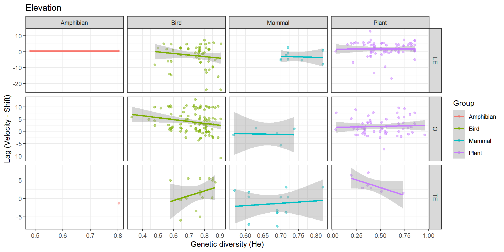
11 Mergind using average He per Param & species
Use lower latitude TE and higher latitude as LE
Code
gen_div_avg_2 <- gen_div %>%group_by(spp) %>%summarise(#N = length(spp),LE =median(He_harm[which(lat==max(lat))]),O =median(He_harm),TE =median(He_harm[which(lat==min(lat))])) %>%# filter(N>5) %>%select(spp, LE, O, TE) %>%gather(Param, He, -spp)#merge all data frames in listgen_data_v1_avg_2 <-append(list(gen_div_avg_2), list(biov1)) %>%reduce(full_join, by=c("spp","Param"))gen_data_v1_avg_2 <- gen_data_v1_avg_2 %>%filter(!is.na(He), !is.na(SHIFT))# N specieslength(unique(gen_data_v1_avg_2$spp))
[1] 321
Code
# Remove groups with few speciesrem <- gen_data_v1_avg_2 %>%group_by(Class) %>%summarise(N =length(unique(spp)))rem <- rem$Class[which(rem$N<3)]gen_data_v1_avg_2 <- gen_data_v1_avg_2 %>%filter(!Class %in% rem)# N specieslength(unique(gen_data_v1_avg_2$spp))
[1] 316
Code
# Use only plus plus or minus minustable(gen_data_v1_avg_2$shift_vel_sign)
negneg negpos posneg pospos
38 816 62 1019
Code
gen_data_v1_avg_2 <- gen_data_v1_avg_2 %>%filter(shift_vel_sign =="pospos"| shift_vel_sign =="negneg")# N specieslength(unique(gen_data_v1_avg_2$spp))
[1] 260
11.1 Which species?
Code
toplot_ <- gen_data_v1_avg_2 %>%group_by(Group) %>%summarise(N =length(unique(spp)))ggplot(toplot_, aes(x = Group, y = N))+ggtitle("N species by Group")+geom_bar(stat="identity")+geom_text(aes(y=N, label=N), hjust =-.1, vjust=0.2, size=3, position =position_dodge(0.9))+theme_classic()+coord_flip()
1 from 321
2 from 321
3 from 321
4 from 321
5 from 321
6 from 321
7 from 321
8 from 321
9 from 321
10 from 321
11 from 321
12 from 321
13 from 321
14 from 321
15 from 321
16 from 321
17 from 321
18 from 321
19 from 321
20 from 321
21 from 321
22 from 321
23 from 321
24 from 321
25 from 321
26 from 321
27 from 321
28 from 321
29 from 321
30 from 321
31 from 321
32 from 321
33 from 321
34 from 321
35 from 321
36 from 321
37 from 321
38 from 321
39 from 321
40 from 321
41 from 321
42 from 321
43 from 321
44 from 321
45 from 321
46 from 321
47 from 321
48 from 321
49 from 321
50 from 321
51 from 321
52 from 321
53 from 321
54 from 321
55 from 321
56 from 321
57 from 321
58 from 321
59 from 321
60 from 321
61 from 321
62 from 321
63 from 321
64 from 321
65 from 321
66 from 321
67 from 321
68 from 321
69 from 321
70 from 321
71 from 321
72 from 321
73 from 321
74 from 321
75 from 321
76 from 321
77 from 321
78 from 321
79 from 321
80 from 321
81 from 321
82 from 321
83 from 321
84 from 321
85 from 321
86 from 321
87 from 321
88 from 321
89 from 321
90 from 321
91 from 321
92 from 321
93 from 321
94 from 321
95 from 321
96 from 321
97 from 321
98 from 321
99 from 321
100 from 321
101 from 321
102 from 321
103 from 321
104 from 321
105 from 321
106 from 321
107 from 321
108 from 321
109 from 321
110 from 321
111 from 321
112 from 321
113 from 321
114 from 321
115 from 321
116 from 321
117 from 321
118 from 321
119 from 321
120 from 321
121 from 321
122 from 321
123 from 321
124 from 321
125 from 321
126 from 321
127 from 321
128 from 321
129 from 321
130 from 321
131 from 321
132 from 321
133 from 321
134 from 321
135 from 321
136 from 321
137 from 321
138 from 321
139 from 321
140 from 321
141 from 321
142 from 321
143 from 321
144 from 321
145 from 321
146 from 321
147 from 321
148 from 321
149 from 321
150 from 321
151 from 321
152 from 321
153 from 321
154 from 321
155 from 321
156 from 321
157 from 321
158 from 321
159 from 321
160 from 321
161 from 321
162 from 321
163 from 321
164 from 321
165 from 321
166 from 321
167 from 321
168 from 321
169 from 321
170 from 321
171 from 321
172 from 321
173 from 321
174 from 321
175 from 321
176 from 321
177 from 321
178 from 321
179 from 321
180 from 321
181 from 321
182 from 321
183 from 321
184 from 321
185 from 321
186 from 321
187 from 321
188 from 321
189 from 321
190 from 321
191 from 321
192 from 321
193 from 321
194 from 321
195 from 321
196 from 321
197 from 321
198 from 321
199 from 321
200 from 321
201 from 321
202 from 321
203 from 321
204 from 321
205 from 321
206 from 321
207 from 321
208 from 321
209 from 321
210 from 321
211 from 321
212 from 321
213 from 321
214 from 321
215 from 321
216 from 321
217 from 321
218 from 321
219 from 321
220 from 321
221 from 321
222 from 321
223 from 321
224 from 321
225 from 321
226 from 321
227 from 321
228 from 321
229 from 321
230 from 321
231 from 321
232 from 321
233 from 321
234 from 321
235 from 321
236 from 321
237 from 321
238 from 321
239 from 321
240 from 321
241 from 321
242 from 321
243 from 321
244 from 321
245 from 321
246 from 321
247 from 321
248 from 321
249 from 321
250 from 321
251 from 321
252 from 321
253 from 321
254 from 321
255 from 321
256 from 321
257 from 321
258 from 321
259 from 321
260 from 321
261 from 321
262 from 321
263 from 321
264 from 321
265 from 321
266 from 321
267 from 321
268 from 321
269 from 321
270 from 321
271 from 321
272 from 321
273 from 321
274 from 321
275 from 321
276 from 321
277 from 321
278 from 321
279 from 321
280 from 321
281 from 321
282 from 321
283 from 321
284 from 321
285 from 321
286 from 321
287 from 321
288 from 321
289 from 321
290 from 321
291 from 321
292 from 321
293 from 321
294 from 321
295 from 321
296 from 321
297 from 321
298 from 321
299 from 321
300 from 321
301 from 321
302 from 321
303 from 321
304 from 321
305 from 321
306 from 321
307 from 321
308 from 321
309 from 321
310 from 321
311 from 321
312 from 321
313 from 321
314 from 321
315 from 321
316 from 321
317 from 321
318 from 321
319 from 321
320 from 321
321 from 321
Code
gen_data_v1_dist <-rbindlist(gen_data_v1_dist)gen_data_v1_dist <- gen_data_v1_dist %>%filter(!is.na(He), !is.na(SHIFT))# N specieslength(unique(gen_data_v1_dist$spp))
[1] 321
Code
# Remove groups with few speciesrem <- gen_data_v1_dist %>%group_by(Class) %>%summarise(N =length(unique(spp)))rem <- rem$Class[which(rem$N<3)]gen_data_v1_dist <- gen_data_v1_dist %>%filter(!Class %in% rem)# N specieslength(unique(gen_data_v1_dist$spp))
[1] 316
Code
# Use only plus plus or minus minustable(gen_data_v1_dist$shift_vel_sign)
negneg negpos posneg pospos
13 486 30 537
Code
gen_data_v1_dist <- gen_data_v1_dist %>%filter(shift_vel_sign =="pospos"| shift_vel_sign =="negneg")# N specieslength(unique(gen_data_v1_dist$spp))
[1] 231
12.1 Which species?
Code
toplot_ <- gen_data_v1_dist %>%group_by(Group) %>%summarise(N =length(unique(spp)))ggplot(toplot_, aes(x = Group, y = N))+ggtitle("N species by Group")+geom_bar(stat="identity")+geom_text(aes(y=N, label=N), hjust =-.1, vjust=0.2, size=3, position =position_dodge(0.9))+theme_classic()+coord_flip()
Warning in qt((1 - level)/2, df): NaNs produced
Warning in qt((1 - level)/2, df): no non-missing arguments to max; returning
-Inf
13 Playing with models
14 Select a dataset
Code
mydataset <- gen_data_v1_dist
14.1 1 full models
14.1.1 Latitude
14.1.1.1 Interaction in the fixed effect
Code
# What is the best model?# Lag modelm_lat_l <-lmer(lag2 ~ He*Param*Group + DUR + ID.area + Data + Sampling + Uncertainty_Parameter + Uncertainty_Distribution + (1|ID) + (1|Class/Family),REML=TRUE,na.action="na.fail",control=lmerControl(optimizer="Nelder_Mead",optCtrl=list(maxfun=1e4)),data = mydataset %>%filter(Type =="LAT") %>%filter(Group =="Bird"| Group =="Fish"| Group =="Plant"))
plot_model(m_lat_s, type ="pred", terms =c("He", "Param"))
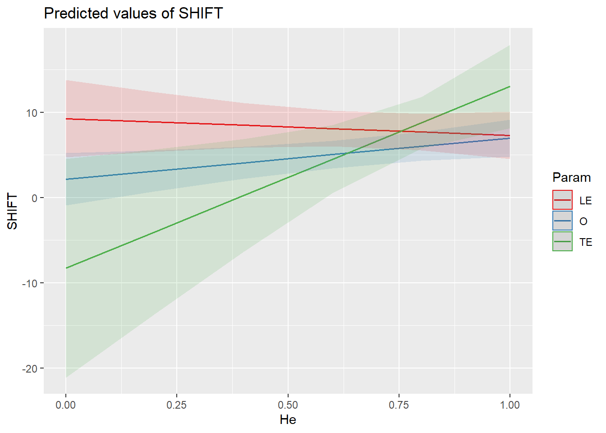
Code
plot_model(m_lat_s, type ="pred", terms =c("He", "Param", "Group"))
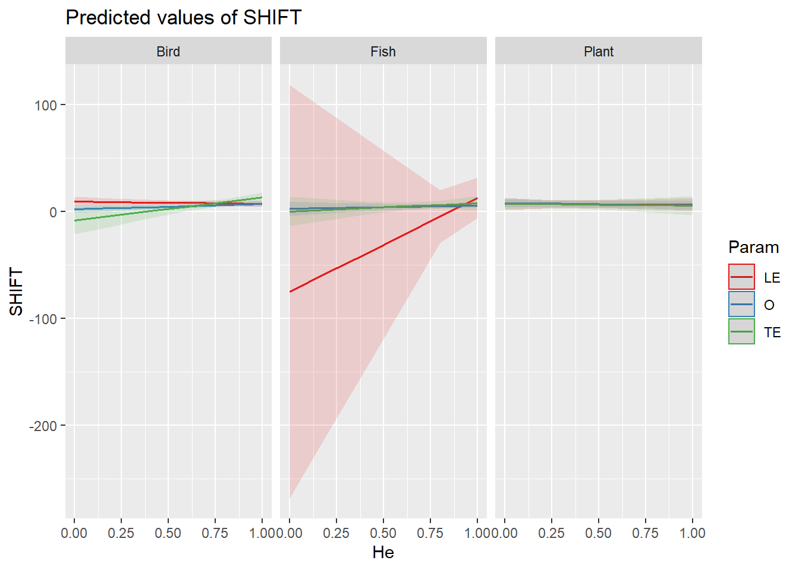
Code
# plot_model(m_lat_l, type = "pred", terms = c("He", "Param"))# plot_model(m_lat_l, type = "pred", terms = c("He", "Param", "Group"))
14.1.1.2 Interaction in the random effect
Code
# What is the best model?# Lag modelm_lat_l <-lmer(lag2 ~ He + DUR + ID.area + Data + Sampling + Uncertainty_Parameter + Uncertainty_Distribution + (He|Param:Group) + (1|ID) + (1|Class),REML=TRUE,na.action="na.fail",control=lmerControl(optimizer="Nelder_Mead",optCtrl=list(maxfun=1e4)),data = mydataset %>%filter(Type =="LAT") %>%filter(Group =="Bird"| Group =="Fish"| Group =="Plant"))
boundary (singular) fit: see help('isSingular')
Code
MuMIn::r.squaredGLMM(m_lat_l)
R2m R2c
[1,] 0.1383607 0.174904
Code
# R2m R2c# 0.1101801 0.2337097# Shift modelm_lat_s <-lmer(SHIFT ~ He + velocity + DUR + ID.area + Data + Sampling + Uncertainty_Parameter + Uncertainty_Distribution + (He|Param:Group) + (1|ID) + (1|Class),REML=TRUE,na.action="na.fail",control=lmerControl(optimizer="Nelder_Mead",optCtrl=list(maxfun=1e4)),data = mydataset %>%filter(Type =="LAT") %>%filter(Group =="Bird"| Group =="Fish"| Group =="Plant"))
plot_model(m_lat_s, type ="pred", pred.type ="re", # prediction is conditioned on random effectsterms =c("He", "Param", "Group"))
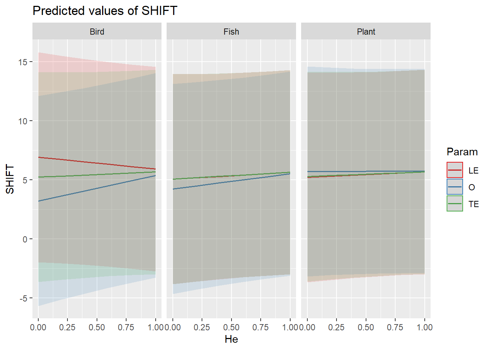
14.1.2 Elevation
14.1.2.1 Interaction in the fixed effect
Code
# What is the best model?# Lag modelm_ele_l <-lmer(lag2 ~ He*Param*Group + DUR + ID.area + Data + Sampling + Uncertainty_Parameter + Uncertainty_Distribution + (1|ID) + (1|Class/Family),REML=TRUE,na.action="na.fail",control=lmerControl(optimizer="Nelder_Mead",optCtrl=list(maxfun=1e4)),data = mydataset %>%filter(Type =="ELE") %>%filter(Group =="Bird"| Group =="Mammal"| Group =="Plant"))
fixed-effect model matrix is rank deficient so dropping 1 column / coefficient
Linear mixed model fit by REML ['lmerMod']
Formula: SHIFT ~ He * Param * Group + velocity + DUR + ID.area + Data +
Sampling + Uncertainty_Parameter + Uncertainty_Distribution +
(1 | ID) + (1 | Class/Family)
Data: mydataset %>% filter(Type == "ELE") %>% filter(Group == "Bird" |
Group == "Mammal" | Group == "Plant")
Control: lmerControl(optimizer = "Nelder_Mead", optCtrl = list(maxfun = 10000))
REML criterion at convergence: 692
Scaled residuals:
Min 1Q Median 3Q Max
-1.85746 -0.45686 -0.01891 0.26864 3.03875
Random effects:
Groups Name Variance Std.Dev.
Family:Class (Intercept) 1.992 1.411
ID (Intercept) 5.837 2.416
Class (Intercept) 0.000 0.000
Residual 15.941 3.993
Number of obs: 136, groups: Family:Class, 41; ID, 33; Class, 5
Fixed effects:
Estimate Std. Error t value
(Intercept) -9.188169 7.533526 -1.220
He 17.420446 7.411027 2.351
ParamO 5.146832 7.090110 0.726
ParamTE 19.524929 14.499212 1.347
GroupMammal 18.430730 10.913571 1.689
GroupPlant 8.818591 6.564464 1.343
velocity 0.318664 0.328173 0.971
DUR 0.007545 0.035806 0.211
ID.area -0.125941 0.257278 -0.490
Dataoccurrence-based -1.331204 2.137489 -0.623
SamplingTWO 1.469596 2.926721 0.502
Uncertainty_Parameteryes -0.028488 1.896784 -0.015
Uncertainty_DistributionPROCESSED 0.864053 2.513849 0.344
He:ParamO -14.651182 9.033280 -1.622
He:ParamTE -30.511438 18.148082 -1.681
He:GroupMammal -25.156722 13.809747 -1.822
He:GroupPlant -7.828421 9.063036 -0.864
ParamO:GroupMammal -5.993862 26.038055 -0.230
ParamTE:GroupMammal -19.694006 18.672311 -1.055
ParamO:GroupPlant -6.342291 7.950145 -0.798
ParamTE:GroupPlant -16.517837 13.040665 -1.267
He:ParamO:GroupMammal 13.311903 37.168897 0.358
He:ParamTE:GroupMammal 27.079973 24.312354 1.114
He:ParamO:GroupPlant 6.078018 11.243997 0.541
Correlation matrix not shown by default, as p = 24 > 12.
Use print(x, correlation=TRUE) or
vcov(x) if you need it
fit warnings:
fixed-effect model matrix is rank deficient so dropping 1 column / coefficient
optimizer (Nelder_Mead) convergence code: 0 (OK)
boundary (singular) fit: see help('isSingular')
Code
plot_model(m_ele_s, type ="pred", terms =c("He", "Param"))
Could not compute variance-covariance matrix of predictions. No confidence intervals are returned.
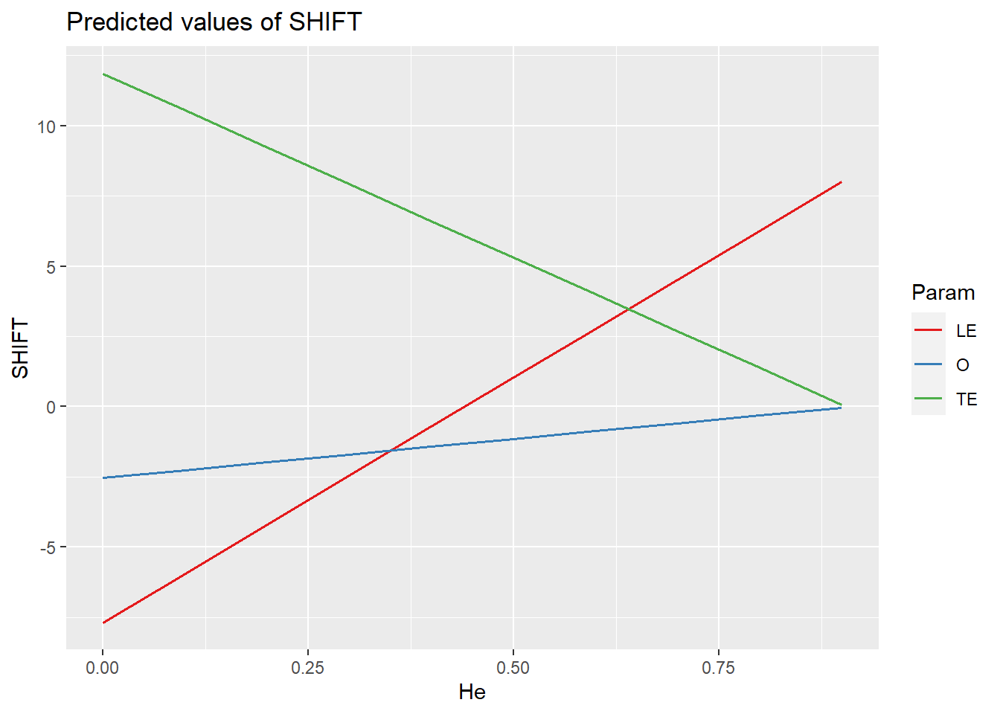
Code
plot_model(m_ele_s, type ="pred", terms =c("He", "Param", "Group"))
Could not compute variance-covariance matrix of predictions. No confidence intervals are returned.
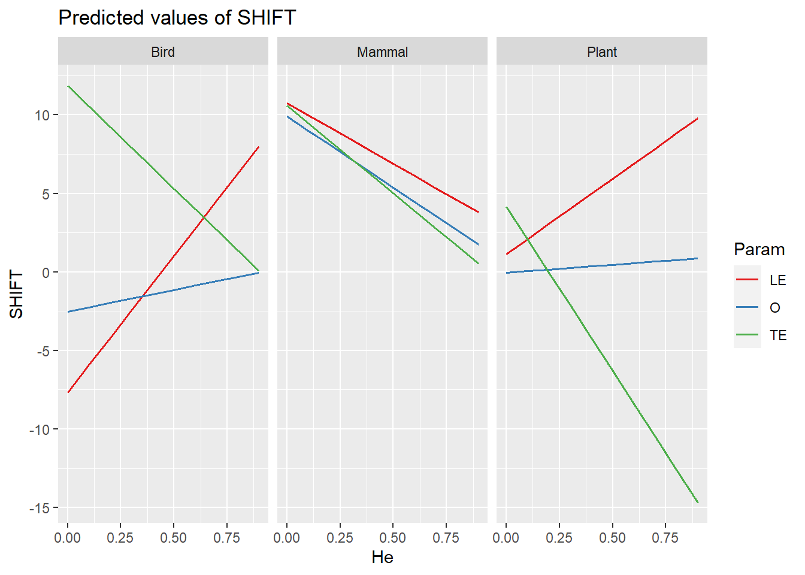
14.1.2.2 Interaction in the random effect
Code
# What is the best model?# Lag modelm_ele_l <-lmer(lag2 ~ He + DUR + ID.area + Data + Sampling + Uncertainty_Parameter + Uncertainty_Distribution + (He|Param:Group) + (1|ID) + (1|Class),REML=TRUE,na.action="na.fail",control=lmerControl(optimizer="Nelder_Mead",optCtrl=list(maxfun=1e4)),data = mydataset %>%filter(Type =="ELE") %>%filter(Group =="Bird"| Group =="Mammal"| Group =="Plant"))
boundary (singular) fit: see help('isSingular')
Code
MuMIn::r.squaredGLMM(m_ele_l)
R2m R2c
[1,] 0.2068523 0.5024641
Code
# R2m R2c# 0.1404882 0.4756365# Shift modelm_ele_s <-lmer(SHIFT ~ He + velocity + DUR + ID.area + Data + Sampling + Uncertainty_Parameter + Uncertainty_Distribution + (He|Param:Group) + (1|ID) + (1|Class),REML=TRUE,na.action="na.fail",control=lmerControl(optimizer="Nelder_Mead",optCtrl=list(maxfun=1e4)),data = mydataset %>%filter(Type =="ELE") %>%filter(Group =="Bird"| Group =="Mammal"| Group =="Plant"))
plot_model(m_ele_s, type ="pred", pred.type ="re", # prediction is conditioned on random effectsterms =c("He", "Param", "Group"))
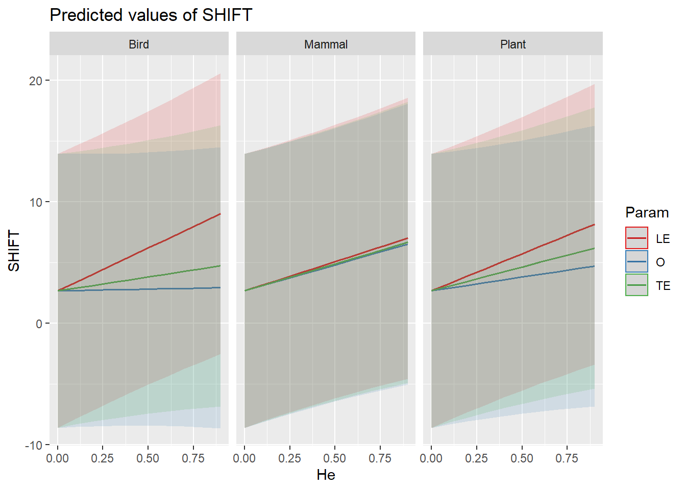
14.2 1 residual models
14.2.1 Latitude
Code
# What is the best model?# Lag modelm_lat_l <-lm(lag_corrected ~ He*Param*Group, data = mydataset %>%filter(Type =="LAT") %>%filter(Group =="Bird"| Group =="Fish"| Group =="Plant"))tmp <-summary(m_lat_l)tmp$r.squared
[1] 0.06754299
Code
# R2 0.06507956# Shift modelm_lat_s <-lm(shift_corrected ~ He*Param*Group,data = mydataset %>%filter(Type =="LAT") %>%filter(Group =="Bird"| Group =="Fish"| Group =="Plant"))tmp <-summary(m_lat_s)tmp$r.squared
plot_model(m_lat_l, type ="pred", terms =c("He", "Param"))
Code
plot_model(m_lat_l, type ="pred", terms =c("He", "Param", "Group"))
14.2.2 Elevation
Code
# What is the best model?# Lag modelm_ele_l <-lm(lag_corrected ~ He*Param*Group, data = mydataset %>%filter(Type =="ELE") %>%filter(Group =="Bird"| Group =="Mammal"| Group =="Plant"))tmp <-summary(m_ele_l)tmp$r.squared
[1] 0.2020306
Code
# R2 0.1576408# Shift modelm_ele_s <-lm(shift_corrected ~ He*Param*Group,data = mydataset %>%filter(Type =="ELE") %>%filter(Group =="Bird"| Group =="Mammal"| Group =="Plant"))tmp <-summary(m_ele_s)tmp$r.squared
[1] 0.2145569
Code
# R2 0.1704202AIC(m_ele_l) # 1853.729
[1] 818.3526
Code
AIC(m_ele_s) # 1861.984
[1] 823.596
Code
# The lag model is bettersummary(m_ele_l)
Call:
lm(formula = lag_corrected ~ He * Param * Group, data = mydataset %>%
filter(Type == "ELE") %>% filter(Group == "Bird" | Group ==
"Mammal" | Group == "Plant"))
Residuals:
Min 1Q Median 3Q Max
-18.7325 -1.1508 0.6007 2.0198 8.1355
Coefficients: (1 not defined because of singularities)
Estimate Std. Error t value Pr(>|t|)
(Intercept) 12.393 6.193 2.001 0.04767 *
He -22.704 8.037 -2.825 0.00555 **
ParamO -10.143 7.362 -1.378 0.17087
ParamTE -27.171 15.917 -1.707 0.09042 .
GroupMammal -25.925 11.416 -2.271 0.02495 *
GroupPlant -12.459 6.599 -1.888 0.06145 .
He:ParamO 18.396 9.573 1.922 0.05703 .
He:ParamTE 39.690 20.070 1.978 0.05028 .
He:GroupMammal 34.186 14.695 2.326 0.02169 *
He:GroupPlant 12.630 9.772 1.293 0.19868
ParamO:GroupMammal 30.897 20.799 1.486 0.14005
ParamTE:GroupMammal 31.157 20.427 1.525 0.12984
ParamO:GroupPlant 9.016 7.877 1.145 0.25463
ParamTE:GroupPlant 22.608 13.959 1.620 0.10796
He:ParamO:GroupMammal -44.674 30.627 -1.459 0.14730
He:ParamTE:GroupMammal -40.625 26.890 -1.511 0.13349
He:ParamO:GroupPlant -8.877 11.670 -0.761 0.44837
He:ParamTE:GroupPlant NA NA NA NA
---
Signif. codes: 0 '***' 0.001 '**' 0.01 '*' 0.05 '.' 0.1 ' ' 1
Residual standard error: 4.591 on 119 degrees of freedom
Multiple R-squared: 0.202, Adjusted R-squared: 0.09474
F-statistic: 1.883 on 16 and 119 DF, p-value: 0.02841
Code
plot_model(m_ele_l, type ="pred", terms =c("He", "Param"))
Warning in predict.lm(model, newdata = fitfram, type = "response", se.fit =
se, : prediction from a rank-deficient fit may be misleading
Code
plot_model(m_ele_l, type ="pred", terms =c("He", "Param", "Group"))
Warning in predict.lm(model, newdata = fitfram, type = "response", se.fit =
se, : prediction from a rank-deficient fit may be misleading
15 —————————-
16 Phenotypic rates and bioshifts data
17 Mergind using average He per species
Code
pheno_rate_avg <- pheno_rate %>%group_by(spp) %>%summarise(N =length(spp),PR =median(PR_harm)) #merge all data frames in listpheno_rate_v1_avg <-append(list(pheno_rate_avg), list(biov1)) %>%reduce(full_join, by='spp')pheno_rate_v1_avg <- pheno_rate_v1_avg %>%filter(!is.na(PR), !is.na(SHIFT))# Remove groups with few speciesrem <- pheno_rate_v1_avg %>%group_by(Class) %>%summarise(N =length(unique(spp)))rem <- rem$Class[which(rem$N<3)]pheno_rate_v1_avg <- pheno_rate_v1_avg %>%filter(!Class %in% rem)# N specieslength(unique(pheno_rate_v1_avg$spp))
[1] 200
Code
# Use only plus plus or minus minustable(pheno_rate_v1_avg$shift_vel_sign)